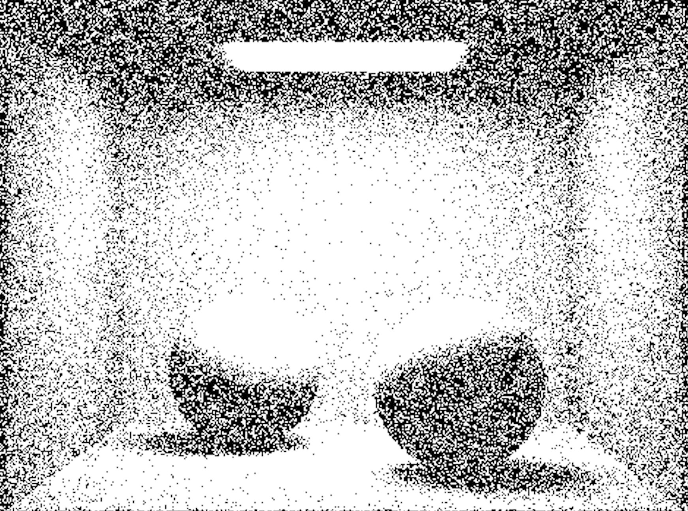
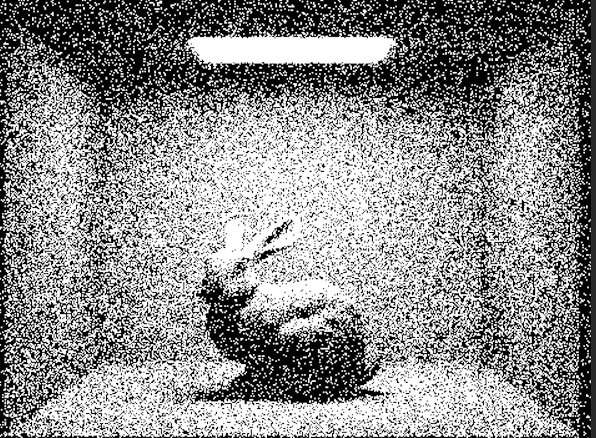

After receiving our feedback, we reassessed our timeline and decided to focus on creating tattoo stencils (2D images) for our project deliverables. We'll still be keeping our GUI as a stretch goal but our main priority will be making sure our tattoo styles are rendered effectively.
Our original goals for the first two weeks were:
So far, we have been able to generate outlines on the 2D image files we render from our 3D mesh scenes. Our method for doing so is very finicky---we modified some of the pdf values from our Project 3 pathtracer---but it's a start for achieving the results we're hoping for. Outlines on images are a key component of 3 of the tattoo styles we want to support so this has been pretty exciting. We are looking into other methods for generating outlines: edge detection (Sobel Edge Detection Filter) with custom GLSL shaders and z-buffer depth maps to determine when a line should be drawn.
We have been able to render images in black and white which was one of our initial goals for both the sketch and stick & poke styles. Although we weren't able to produce a working version of the sketch technique yet, we were able to implement a semi-working version of stick & poke. More specifically, we altered the PathTracer::raytrace_pixel() function. After generating the average value of the samples taken, we took the average of the rgb values ((r+g+b)/3). This generates a grayscale equivalent using the average method described in the link below. If we set each of r, g, and b to this average value, we get a grayscale equivalent of our original color (rgb(avg_val, avg_val, avg_val)).
Average method description
Then, we want to decide whether to fill in the pixel with black or white based on this average value. Since the RGB values are between 0 and 1, we used the value directly as a probability. According to that probability, we generated random values to determine where the pixel would be colored white. For example, if our average value was 0.1, then the pixel would have a 10% chance of being colored white. We also added an offset of 0.035 (which we found works well via experimentation) which helped bring more white spots to the rendering, which stick and poke tends to have. Finally, we used update_pixel() to add the white or black color to our sampleBuffer.
During the process, we experimented with a couple of other ways to achieve this effect that failed. We first tried to generalize each tile to one value and randomly color in pixels according to the corresponding probability in the RaytracedRenderer::raytrace_tile() function. However, the tiles were too large for the images to be legible since a lot of the details were abstracted away. We also tried to make these tiles smaller, but discovered that calculating probabilities based on each pixel produced the most legible results. We also tried to reveal more white parts by eliminating midtones and just making them white, but found that this created unpredictable results depending on the lighting of the original image. Adding an offset to our average worked out a lot better.
Below are two examples of what our current rendering looks like.
|

|

|
Chrome and New American are still works in progress. For our chrome technique, we are working on modifying our metallic shaders from Project 3 to take onn the exaggerated shading that the style uses and incorporating outlines.
For New American, we are trying to recreate the simplistic color gradient style using euclidean distance to approximate the colors in our scene according to a bolder, reduced color palette.
We are not adjusting our project timeline.
Description